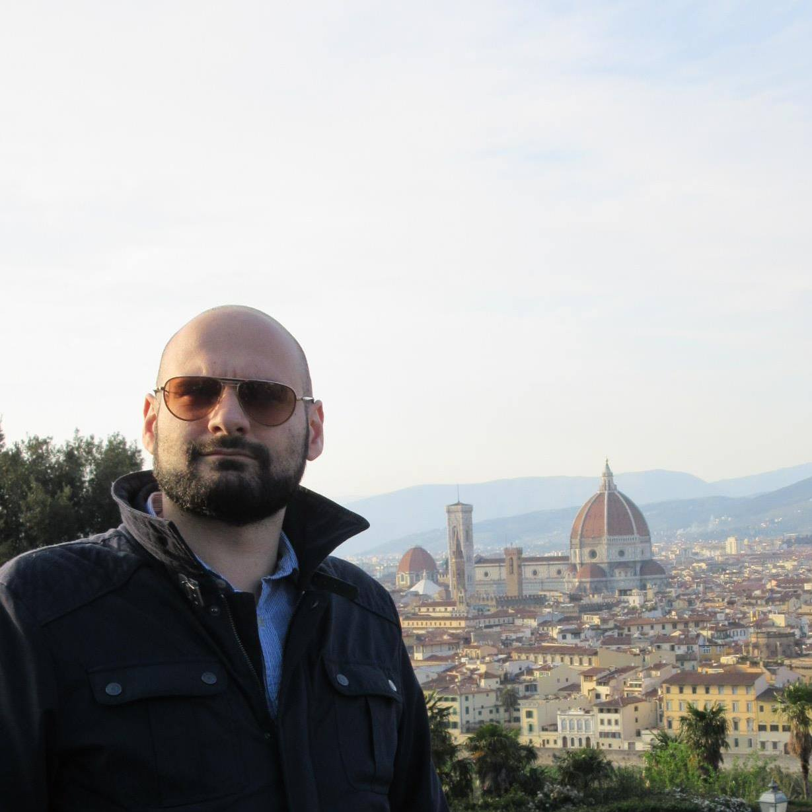

About me

Michele Tirico is a junior researcher at LGI laboratory (CentraleSupélec, University of Paris-Saclay).
He received his Ph.D in computer science by University of Le Havre Normandy (France),
his M.Sc. in engineering by University of Pisa (Italy)
and a second M.Sc. in geography by University of Côte d'Azur, Nice (France).
He is interested in modelling, simulation and analysis of complex systems, morphogenesis and urban dynamics.
His approaches are drawn from complexity theory, dynamic networks, network analysis, cellular automata and multi-agent systems.
Contacts
Adress : CentraleSupélec, 3 Rue Joliot Curie, 91190 Gif-sur-Yvette, Francia
ORCID :
0000-0001-9964-5762
GitHub :
MicheleTirico
Twitter :
@MicheleTirico
e-mail (For any questions, feel free to contact me via e-mail)
tirico.michele@outlook.com
michele.tirico@centralesupelec.fr
michele.tirico@univ-lehavre.fr
Accademic positions and research experieces
2022 PostDoc, University of Paris-Saclay, CentraleSupélec, Gif-sur-Yvette, France
2021 PostDoc, University of Le Havre Normandy, Le Havre, France
2016-2020 Ph.D. in computer science at
LITIS (
RI2C team) and
FR CNRS 3638 NormaSTIC, Le Havre, France
2015-2016 Assistant in research laboratory at
CNRS UMR 7300 ESPACE, Nice, France
2015 Erasmus+ traineeship at
CNRS UMR 7300 ESPACE, Nice, France
Publications
-
Tirico M., Balev S., Dutot A., Olivier D. (2021) Morphogenesis of street networks. A reaction-diffusion system for self-organized cities”. In: European Colloquium on Theoretical and Quantitative Geography 2021. Manchester (UK), pp. 57–62.
-
Tirico M., Balev S., Dutot A., Olivier D. (2021) A reaction-diffusion system drives the morphogenesis of spatial complex networks, in French Regional Conference on Complex Systems. FRCCS 2021, Djon.
-
Tirico M., Balev S., Dutot A., Olivier D. (2019) Morphogenesis of Complex Networks: A Reaction Diffusion Framework for Spatial Graphs, in: Complex Networks and Their Applications VII. COMPLEX NETWORKS 2018. Studies in Computational Intelligence, vol 812, pp 769-781, Springer Cham. Cambridge.
-
Tirico M., Balev S., Dutot A., Olivier D. (2017) Turing’s Theory of Morphogenesis Applied to Street Layout, First Approach, in WANCSA, 2nd Workshop on Advance in Nonlinear Complex Systems and Application, Le Havre.
-
Fusco G., Tirico M. (2016) Configurational Approaches to Urban Form: Empirical Test on the City of Nice (France), in: INPUT 2016: The 9th International Conference on Innovation in Urban and Regional Planning, pp. 376-382, Turin.
Teaching
Researcher and teaching assistant (ATER)
Higher Institute of Logistic Studies, public school of engineers post-bac (ISEL), 2019-2021
Role: lecturer and tutor. Helped write assignments and exams.
Topics: programming and Python language, web page design, office, mail, web security.
Education
Ph.D. in computer science
University of Le Havre Normandy, Litis laboratory, France, 11/2020
Title Morphogenesis of complex networks. An application in urban growth.
Laboratory LITIS,
RI2C team
Keywords complex networks, complex systems, morphogenesis, spatial networks, reaction-diffusion systems, urban growth models, graph generator, fractal theory.
Advisor Damien Olivier (full professor, University of Le Havre Normandy)
Abstract The characteristics, functions and morphogenetic processes of a large number of complex spatial networks are influenced by the position and the geometry of their constituent elements. In this work, we address the computational aspects of the morphogenesis of complex networks by proposing a general model, simulating their formation. The networks are generated under the influence of constraints expressed through a vector field that is determined using a reaction-diffusion system. We use the Gray-Scott model to produce a wide variety of dynamic patterns. The resulting vector field controls the geometry and the growth rate of the constructed network that feeds back the reaction-diffusion process. A study was carried out on the influence of the patterns and feedback processes on the structure of the obtained networks using measures from graph theory and multi-fractality theory. A process of validation and evaluation of the model's behaviour was carried out and applied by comparing the networks obtained to largest French cities and the most relevant geometric planar graphs.
M.Sc. in Geography
University of Côte d'Azur, Nice, France, 07/2016
Master Geoprospective, Planning and Sustainability: Spatial Structures and Dynamics (
Geoprad Sds)
Thesis title Discriminer des morphologies urbaines : Application des approches configurationnelles à l’agglomération de Nice
Laboratory CNRS UMR 7300 ESPACE
Advisor Giovanni Fusco (full professor, CNRS Senior Research Fellow)
Topics Urban morphology, spatial analysis, street network analysis, configurational analysis, space syntax.
M.Sc. in Architecture and Construction Engineering
University of Pisa, Italy, 12/2015
Topics Architectural design, material and construction technology, graphic computer science,urban planning, urban analysis.
Thesis title Centralità urbana e connettività. Applicazione delle tecniche di analisi configurazionale
nel progetto di riqualificazione urbana dell’abitato di Saint-Laurent-du-Var nell’area metropolitana di Nizza
Laboratory DESTEC
Advisors Valerio Cutini (full professor, University of Pisa) and Giovanni Fusco (full professor, CNRS Senior Research Fellow)